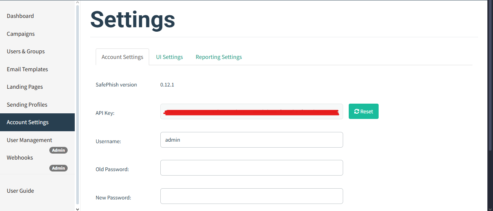
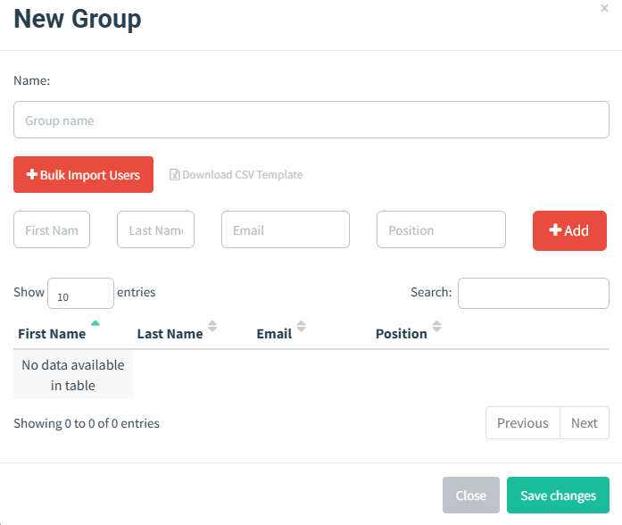
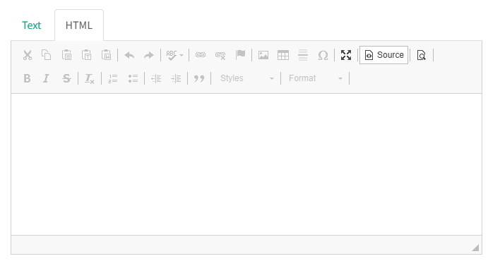
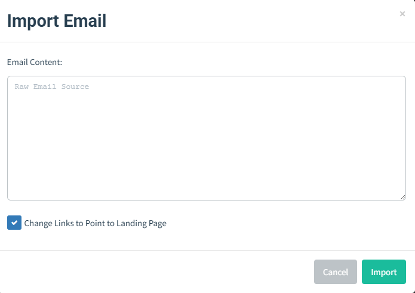

Manual de Operação SafePhish
Este documento detalha as principais funcionalidades da plataforma SafePhish.
Alterando Configurações da Conta
Alterando Sua Senha e Atualizando Configurações
Ao clicar na aba "Account Settings", você será direcionado para a página de configurações.
Essa página permite alterar sua senha e também atualizar sua chave de API.
Alterar Senha
Para alterar sua senha, informe sua senha atual e a nova senha que deseja utilizar, depois clique em "Save". Quaisquer erros serão exibidos na própria página.
Redefinir Chave de API
Esta página também oferece a opção de redefinir sua chave de API. Para redefinir sua chave de API, basta clicar no botão "Reset" ao lado da chave atual.
Groups (Grupos e Usuários)
O SafePhish permite que você gerencie grupos de usuários que serão alvo nas campanhas.
Criando Grupos
Para criar um grupo, primeiro navegue até a página "Users & Groups" no menu de navegação e clique no botão . Você verá a seguinte janela aparecer:
Para adicionar um grupo, você precisa especificar um nome único para o grupo, além de pelo menos um destinatário.
Adicionando Usuários ao Grupo
Você pode adicionar usuários ao grupo de duas maneiras:
1. Adicionando Usuários Manualmente
Para adicionar usuários manualmente, preencha os campos "First Name", "Last Name", "Email" e "Position" e clique no botão "Add".
2. Upload em Massa de Usuários (CSV)
Adicionar usuários manualmente pode ser trabalhoso. Para facilitar, o SafePhish permite fazer upload em massa a partir de um arquivo CSV.
O arquivo CSV deve conter o seguinte cabeçalho:
- First Name
- Last Name
- Position
Para enviar um CSV com as informações dos usuários, clique no botão "Bulk Import Users" e selecione o arquivo desejado. Os usuários serão carregados e exibidos na janela.
Para salvar o grupo, clique em "Save changes".
Templates (Modelos de E-mail)
Um "Template" (Modelo) é o conteúdo dos e-mails que são enviados aos alvos. Eles podem ser importados de um e-mail existente ou criados do zero. Eles também suportam o envio de anexos.
Além disso, os modelos podem conter imagens de rastreamento para que o SafePhish saiba quando o usuário abre o e-mail.
Criando Modelos
Para criar um modelo, primeiro navegue até a página “Email Templates” e clique no botão .
Usando o Editor HTML
Um recurso poderoso do SafePhish é o editor HTML. Para alternar entre o código-fonte HTML e a visualização, clique no botão "Source".
Isso é útil para garantir que o e-mail recebido pelo usuário seja perfeito em cada pixel.
Importando um E-mail
O SafePhish suporta a capacidade de importar um e-mail a partir do conteúdo bruto. Para fazer isso, clique no botão "Import Email" e cole o conteúdo original do e-mail. Esse conteúdo geralmente é encontrado através do recurso "View Original" (Ver Original) de muitos clientes de e-mail:
Rastreamento em Anexos (Attachment Tracking)
É possível adicionar variáveis de template do SafePhish ao conteúdo de determinados tipos de arquivos anexados.
Os seguintes formatos são suportados:
| Type | Extension | Sample Template |
|---|---|---|
| Documento Word | .docx | safephish_word.docx |
| Documento Word com Macro | .docm | safephish_word_macro.docm |
| Apresentação PowerPoint | .pptx | safephish_powerpoint.pptx |
| Documento Excel | .xlsx | safephish_excel.xlsx |
| Documento Excel com Macro | .xlsm | safephish_excel_macro.xlsm |
| Arquivo de Texto | .txt | safephish_text.txt |
| Arquivo HTML | .html | safephish_html.html |
| Arquivo de Calendário | .ics | safephish_invite.ics |
Qualquer variável de template colocada dentro desses documentos será convertida para os valores corretos quando a campanha for lançada.
Adicionar imagens de rastreamento em documentos Office permite identificar quando um documento foi aberto ou quando macros foram ativadas.
Variáveis de Template (Exemplo)
Dear {{.FirstName}} {{.LastName}},
Your email address is {{.Email}} and your position is {{.Position}}
Below is a tracking image When this document opens Word will try load it from the safephish server, creating a notification that the document has been opened
(image URL is {{.TrackingURL}})Exemplos de Documentos Office
Rastreando Abertura de Documento Office
Adicionar {{.TrackingURL}} como imagem vinculada para rastrear abertura do arquivo.
Passos:
- Criar novo documento.
- Inserir → Quick Parts → Field → IncludePicture.
- Inserir
{{.TrackingURL}}. - Marcar "Data not stored with document".
Rastreando Execução de Macros
Crie uma textbox com {{.URL}}, nomeie de urlbox e use o macro:
Word VBA:
Sub urlfetch()
Dim shp As Shape
For Each shp In ActiveDocument.Shapes
If shp.Name = "urlbox" Then
URL = shp.TextFrame.TextRange.Text
ActiveDocument.FollowHyperlink Address:=URL
End If
Next
End Sub
Public Sub AutoOpen()
urlfetch
End SubExcel VBA:
Sub urlfetch()
For Each shp In ActiveSheet.Shapes
If shp.Name = "urlbox" Then
Url = shp.TextFrame2.TextRange.Text
FollowHyperlink (Url)
End If
Next
End Sub
Public Sub Workbook_Open()
urlfetch
End SubExemplos de Arquivo Texto (.txt)
Exemplo foo.txt:
Hello {{.FirstName}},
This is a plain text file that was sent to {{.Email}}.
If you could be so kind as to copy and paste this URL into your browser: {{.URL}}Exemplo invite.ics:
BEGIN:VCALENDAR
DTSTAMP:20210306T182251Z
DTSTART;TZID=Europe/London:20210306T183000
DTEND;TZID=Europe/London:20210306T190000
SUMMARY:SafePhish Test Calendar
TZID=Europe/London
DESCRIPTION:Glenn is inviting you to a Zoom meeting.
Join Zoom Meeting {{.URL}}
LOCATION:{{.URL}}
END:VCALENDARSending Profiles (Perfis de Envio)
Para enviar e-mails, o SafePhish exige que você configure os detalhes de um servidor SMTP, chamados de “Sending Profiles”.
Para criar um perfil de envio:
- Clique em “Sending Profiles” no menu lateral
- Clique no botão “New Profile”
Configuração dos Perfis de Envio
- O campo “From” deve conter um endereço de e-mail válido e no formato correto.
- O campo “Host” deve incluir host + porta, por exemplo:
smtp.seuservidor.com:587
Enviando um E-mail de Teste
Para testar a configuração do SMTP, clique no botão “Send Test Email”. Após preencher os dados do destinatário e clicar em “Send”, o SafePhish mostrará uma mensagem indicando se o e-mail foi enviado com sucesso ou não.
Send Test EmailGenerating Reports (Gerando Relatórios)
Gerar relatórios é uma parte essencial de qualquer campanha realizada no SafePhish. Para facilitar esse processo, existem algumas opções que você pode utilizar:
Usando a Interface Web (Web UI)
O painel do SafePhish fornece uma visão geral rápida dos resultados de uma campanha específica.
Além de visualizar os resultados diretamente no painel, você pode exportar os logs brutos do SafePhish usando o botão "Export CSV" localizado no topo da página.
Depois disso, você pode analisar esses arquivos CSV usando softwares como:
- Microsoft Excel
- Google Sheets
- Ou qualquer ferramenta que aceite arquivos CSV
Email Reporting (Relato de E-mails Suspeitos)
O SafePhish permite que usuários reportem e-mails simulados de phishing, incentivando a detecção precoce de ameaças reais. A partir da versão v0.9.0, oferece suporte a reporte via IMAP.
ImportÂncia do Email Reporting
Relatórios ajudam a identificar campanhas em andamento. Exemplos comparativos mostram que mesmo um único reporte pode alertar administradores para uma ameaça ativa.
Reportando via IMAP
Organizações usam endereços como security@empresa.com. O SafePhish verifica essa caixa via IMAP e marca os e-mails como reportados.
Configurações em: Account Settings → Reporting Settings
Inclui:
- Host IMAP
- Porta
- Username
- Password
- TLS
- Pasta IMAP
- Frequência de verificação
- Exclusão opcional após reporte
Para reportar, basta acessar: Legal: http://phish_server/report?rid=1234567
Webhooks
A partir da v0.9.0, o SafePhish envia eventos em tempo real via webhooks.
Admins podem criar múltiplos webhooks em: Webhooks → New Webhook
Os eventos são enviados como JSON e podem ser assinados com HMAC-SHA256.
A assinatura vem no header: X-SafePhish-Signature: sha256=<hash>
Exemplo de Evento
{
"email": "foo.bar@example.com",
"time": "2020-01-20T17:33:55.553906Z",
"message": "Email Opened",
"details": ""
}Mensagens possíveis:
- Error Sending Email
- Email Sent
- Email Opened
- Clicked Link
- Submitted Data
- Email Reported
User Management (Gerenciamento de Usuários)
Papéis disponíveis:
- User – Acesso limitado
- Admin – Acesso total
Criar usuários:
User Management → + New User
Opções:
- Username
- Password
- Role
- Forçar redefinição de senha
Excluir usuários: ícone de lixeira. Nunca é permitido excluir o último Admin.
Impersonate A User
Admins podem assumir a sessão de um usuário para troubleshooting. Depois, deve-se fazer logout e login novamente.
Logging (Registro de Logs)
Por padrão, logs vão para stderr.
Antes da v0.8.0
Redirecionamento manual:
./safephish > safephish.log 2>&1A partir da v0.8.0
Configuração no config.json:
"logging": {
"filename": "safephish.log"
}